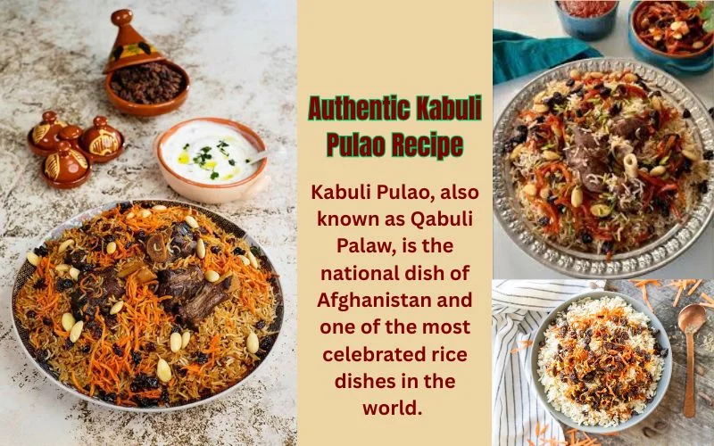
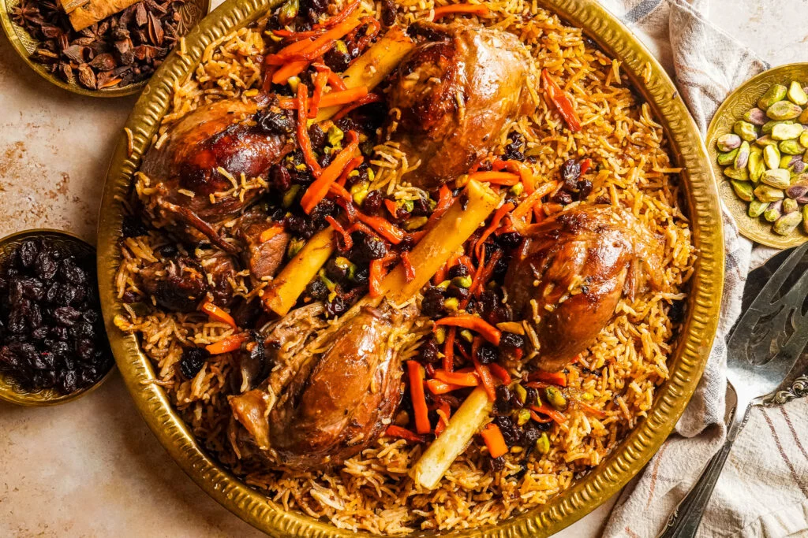

Home - All Recipes
Afghan Kabeli Palaw


Food Introduction:
Kabuli Palaw is Afghanistan's national dish and one of the most beloved meals in Afghan cuisine. It is a flavorful rice dish made with tender lamb, fragrant spices, and topped with sweet carrots and raisins. The combination of savory meat and slightly sweet toppings gives it a unique and rich taste.
This dish is often served during special occasions, family gatherings, and celebrations. While it may look complex, Kabuli Palaw is made using simple ingredients and traditional cooking techniques that bring out deep, comforting flavors.
Ingredients:
- 2 cups basmati rice
- 500g lamb or beef, cut into pieces
- 2 medium onions, sliced
- 3 cloves garlic, minced
- 2 large carrots , cut into slices
- 1/2 cup raisins
- 1/4 cup vegetale oil
- 1 teaspoon cumin
- 1 teaspoon ground cardamom
- 1 teaspoon black pepper
- 1 teaspoon of salt
- 1/2 teaspoon cinnamon
- 4 cups of water
- suger for carrots
Steps to Cook it:
- Wash the rice thoroughly and soak it in water for about 30 minutes.
- Heat oil in a pot and sauté the sliced onions until golden brown.
- Add the meat and cook until browned on all sides.
- Add garlic, salt, pepper, cumin, and cardamom, then mix well.
- Pour in water and let the meat cook until tender (about 45-60 minutes).
- Remove the meat and set it aside, keeping the broth.
- In another pan, lightly fry the carrots with a little sugar until soft. Add raisins and cook for a few minutes, then set aside.
- Boil the soaked rice in salted water until it is about 70% cooked, then drain.
- Layer the rice and meat in a pot, adding some broth for flavor.
- Cover and let it steam on low heat for 20-30 minutes.
- Top the rice with the cooked carrots and raisins before serving.